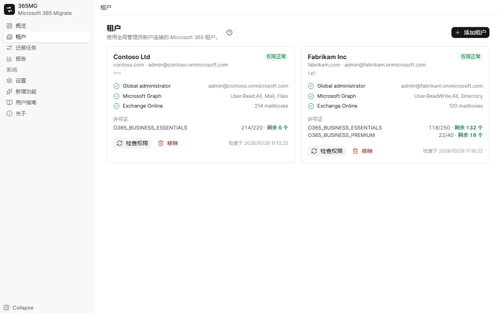
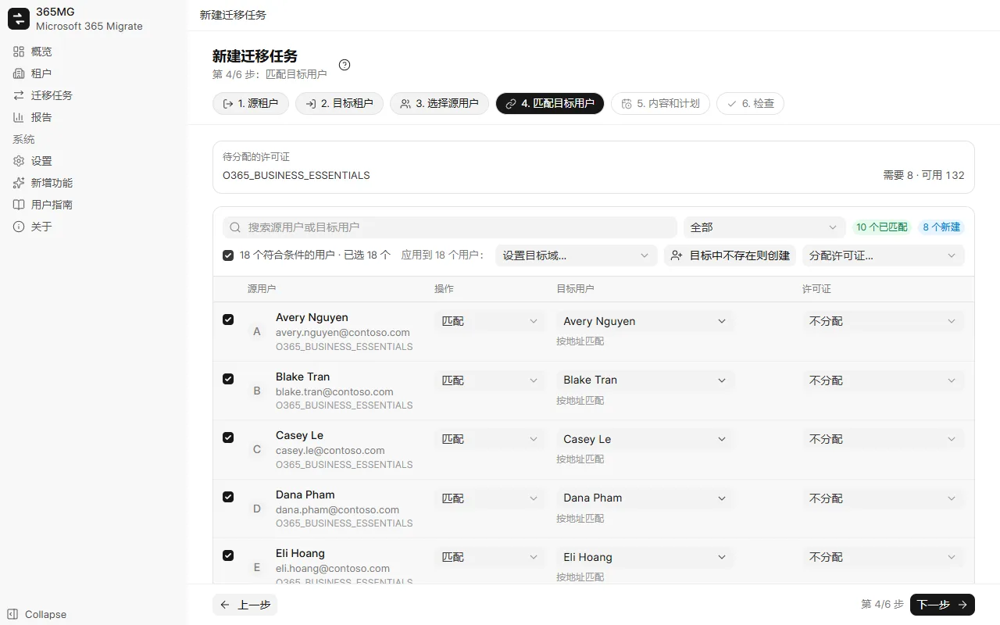
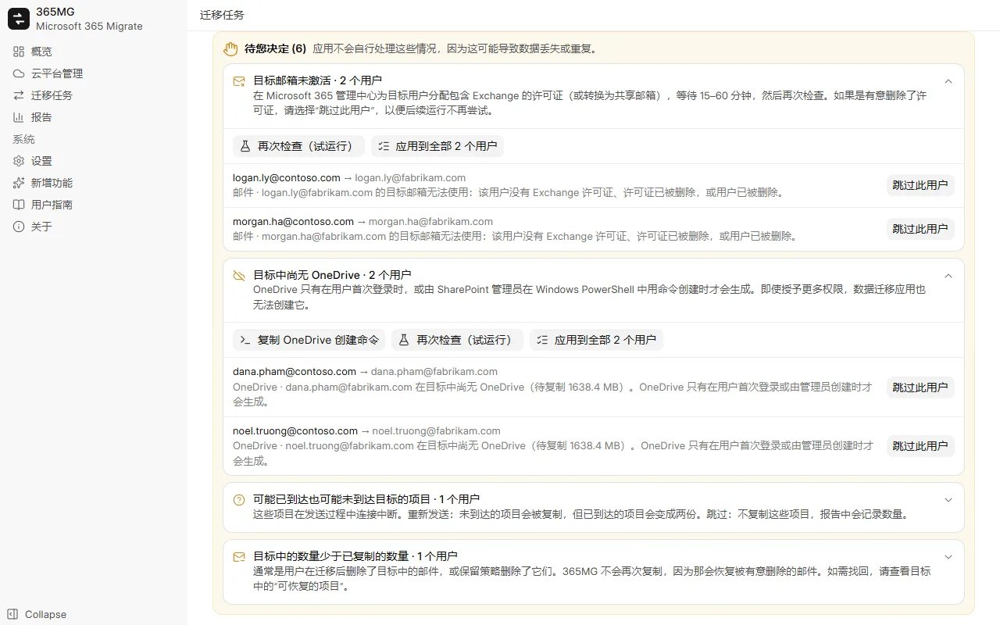

用户指南
从安装 365MG 到最后一份报告。每部分都有屏幕截图；操作演示用动画光标重现主要任务。
1. 安装
365MG 运行于 Windows 10 或 11（64 位），需要 Microsoft Edge WebView2，Windows 已自带。安装程序由作者提供：请发邮件到下方地址。
- 运行
365MG_x.y.z_x64-setup.exe并按安装程序提示操作。 - 从“开始”菜单打开 365MG。数据保存在此电脑的
%APPDATA%\com.tuanhd.365mg中。 - 在设置中选择界面语言，并在辅助驱动器上选择临时文件夹。
2. 开始之前
- 源租户和目标租户中各有一个全局管理员帐户。
- 目标中有足够的包含 Exchange Online（和 OneDrive）的许可证，供您创建或映射的用户使用。
- 一台在复制期间可以保持开机、网络连接快速稳定的电脑：数据会经过它。
- 一个用于临时文件夹的辅助驱动器；只有 4 MB 及以上的 OneDrive 文件会经过它。
3. 添加云平台
- 打开云平台管理，单击添加云平台并选择 Microsoft 365。
- 在打开的浏览器窗口中以全局管理员身份登录，并接受权限请求。
- 返回 365MG 后，该云平台会显示为一张带有 Microsoft 365 标签和健康状态徽章的卡片。单击卡片可查看其域、权限检查结果和许可证；在管理中心更改任何内容后，请使用检查权限。

4. Google Workspace
Google Workspace 既可作为源，也可作为目标，支持邮件、联系人、日历、Google 云端硬盘、共享云端硬盘和组。每个 Workspace 只需连接一次，共三个步骤。
- OAuth 客户端（整个应用只需一次）：在 Google Cloud Console → API 和服务 → 凭据中，创建类型为桌面应用的 OAuth 客户端 ID，然后在 365MG 的设置 → Google Workspace OAuth 客户端中输入其客户端 ID 和密钥。“设置”中提供了操作步骤和打开相应页面的按钮。
- 登录：在云平台管理中单击添加云平台 → Google Workspace，并以超级管理员身份登录。
- 数据迁移应用：打开新卡片并单击设置数据迁移应用。365MG 会创建一个 Google Cloud 项目，启用所需的 API，并创建一个服务帐号，其密钥加密保存在这台电脑上。
- 全网域授权：复制显示的客户端 ID 和范围列表，打开管理控制台 → 安全性 → 访问权限和数据控制 → API 控制 → 全网域授权，单击添加新的，粘贴两者并授权。返回 365MG 后，单击我已添加 — 检查。
| 内容 | Microsoft → Google | Google → Microsoft |
|---|---|---|
| 邮件 | 每个文件夹变为一个标签；保留已读状态和标记 | 每封邮件放入一个文件夹（其第一个标签，或收件箱/已发送/存档）；其他标签变为类别 |
| 联系人 | 联系人文件夹变为联系人组 | 联系人组变为联系人文件夹 |
| 日历 | 导入事件及参与者，不发送邀请 | 创建事件时不含参与者（否则 Microsoft 会发送邀请）；参与者列表保留在事件正文中 |
| 云端硬盘 | OneDrive 文件原样复制到“我的云端硬盘” | 文档、表格、幻灯片导出为 Word、Excel、PowerPoint；跳过表单和协作平台 |
| 共享云端硬盘 | SharePoint/Teams 库 → 共享云端硬盘（含成员） | 共享云端硬盘 → 私有 Microsoft 365 组（团队网站，含成员） |
| 组 | Microsoft 365 组和列表 → 设置相应的 Google 群组 | Google 群组 → Microsoft 365 组 |
共享云端硬盘：在迁移任务选项中勾选共享云端硬盘 / SharePoint 库，然后在迁移任务的共享云端硬盘选项卡中选择源云端硬盘并单击在目标中创建：365MG 会创建目标共享云端硬盘或 Microsoft 365 组，并添加能够匹配的成员。
5. 创建迁移任务
一个迁移任务把一组用户从一个源租户迁移到一个目标租户。向导共六步；标题、步骤和筛选器始终显示在顶部，上一步 / 下一步 / 保存迁移任务 始终显示在底部。
- 源租户 和 目标租户：各占一步。
- 选择源用户：按许可证、域或状态筛选，在列表中勾选用户并添加到已选列表。
- 匹配目标用户：365MG 按地址、别名或显示名称推荐目标用户。勾选行后批量使用 设置目标域…、目标中不存在则创建 或 分配许可证…；列表上方的复选框会勾选筛选器显示的所有行。
- 内容和计划：邮件、OneDrive、联系人、日历；跳过垃圾邮件；运行一次或每 N 小时运行；线程数。
- 检查：检查摘要和所需许可证，然后点击 保存迁移任务。

6. 准备目标用户
在迁移任务页面，创建用户并分配许可证会创建标记为“创建”的目标用户，并为每个用户分配所选许可证。失败的行会显示原因；修复后再次运行即可。
新用户会获得一个随机初始密码，首次登录时必须更改。从 ⋯ 菜单将其导出为 CSV，交给用户后删除该文件。
7. 批次和试运行
在用户选项卡中勾选用户，使用移至批次拆分大型迁移。然后运行栏可以一次启动一个批次；计划运行会持续同步所有已开始的批次。
试运行（仅计数）读取两侧数据，报告实际运行将复制多少项目、文件和兆字节。它不会向目标写入任何内容，并会检查每个目标邮箱和 OneDrive 是否存在。
8. 运行、暂停、继续
每个迁移任务选项卡顶部的运行栏会显示迁移任务正在做什么以及接下来做什么。
| 状态 | 显示内容 | 按钮 |
|---|---|---|
| 尚未运行 | 计划 | 立即开始、试运行 |
| 正在复制 | 已用时间、正在运行和等待中的线程 | 暂停 |
| 已暂停 | 上次运行 | 继续（复制剩余内容） |
| 已同步 | 完成时间和下次计划运行 | 再次运行（获取新数据）、暂停计划 |
暂停会停止线程并挂起计划。所有已复制的内容都保存在日志中，因此继续时绝不会重复复制。复制进度选项卡显示每个邮箱和 OneDrive 及其速度；停止推进的线程会自动重新启动。
9. 待您决定
当运行遇到不应自行解决的情况时，迁移任务会显示待您决定面板，按类型分组，并为每个用户提供说明和操作。
| 类型 | 处理方法 |
|---|---|
| 目标邮箱未激活 | 为用户分配许可证（或将其设为共享邮箱），等待 15–60 分钟，然后再次检查。如果许可证是有意删除的，请选择跳过此用户。 |
| 目标中尚无 OneDrive | 复制 OneDrive 创建命令，以 SharePoint 管理员身份在 Windows PowerShell 中运行，或让用户登录一次；然后再次检查。 |
| 目标用户已被重新创建 | 从头重新复制到新的邮箱或 OneDrive，或跳过。 |
| 结果未知的项目 | 重新发送（已在目标中的项目会变成两份）或跳过这些项目。 |
| 目标中的数量少于已复制的数量 | 通常是在目标中被有意删除；单击知道了确认即可。 |

10. 邮件组
在邮件组选项卡中选择源组，然后单击创建组并添加成员。Graph 只能创建 Microsoft 365 组，因此通讯组列表和启用邮件的安全组会成为具有相同别名的 Microsoft 365 组，投递到成员的收件箱并接收外部发件人的邮件。没有目标用户的成员会按组列出。
11. 报告
报告按迁移任务显示每个用户及总计的源数量和已复制数量、需要查看的用户、组和备注。导出 HTML 会生成并打开一个单独页面（支持浅色和深色、搜索和筛选）；CSV 导出用户列表或组列表。
12. 设置和语言
- 语言：九种语言，立即生效；阿拉伯语会将布局切换为从右到左。
- 临时文件夹 (spool)：不要放在 C 盘。
- 线程无进展多久后视为卡住：线程在无进展多少分钟后被重新启动（最多两次）。
13. 更新
新增功能列出每个版本的更改。发布新版本后，侧边栏会显示；更新到 x.y.z 会下载新版本、检查作者签名、关闭应用、安装并重新打开。请先暂停正在运行的迁移任务，之后再继续。
14. 故障排除
| 症状 | 原因和解决方法 |
|---|---|
| “正在等待数据迁移应用的权限生效” | 新应用需要几分钟才能被 Exchange 和 SharePoint 接受；运行会自行等待最多 30 分钟。 |
| 速度下降，出现大量“限流”消息 | Exchange 或 SharePoint 按邮箱和按应用进行限制。增加线程对单个邮箱没有帮助；当有许多邮箱在等待时才有帮助。 |
| 目标数量低于源数量 | 查看报告备注：跳过的垃圾邮件、因决定而未复制的项目，或在目标中被删除的邮件。 |
| 某个邮箱在目标中已有邮件 | 365MG 在首次运行时拒绝复制到该邮箱。只有在确定没有其他工具复制过时，才在迁移任务中允许。 |